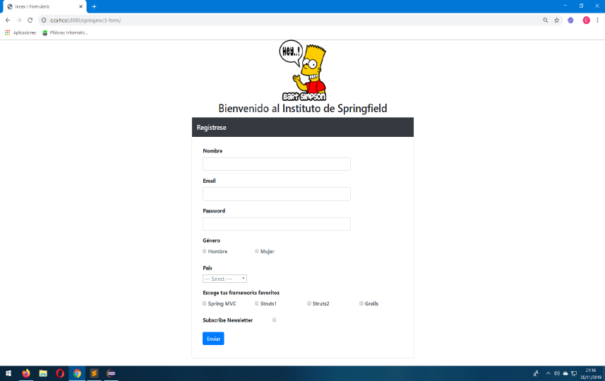

Seguimos avanzando con Spring y hoy vamos a ver como realizar un formulario con este fabuloso framework.
Podeis descargar este proyecto (descargar de GitHub). En él se ven varios de los componentes habituales de los formularios, esto es, input, password, radiobutton, select, etc..., pero lo que se pretende es ver como cargar los select y checkbox desde un archivo properties. En posteriores tutoriales, ya nos conectaremos con una base de datos MySQL.
Podemos observar que tenemos dos vistas, un index.jsp que es el que contiene el formulario y un success.jsp que es el resultado de enviar el mismo.
Empezamos como siempre por las dependencias necesarias para llevar a cabo el proyecto.
<dependencies>
<!-- spring -->
<dependency>
<groupId>org.springframework</groupId>
<artifactId>spring-webmvc</artifactId>
<version>5.1.5.RELEASE</version>
</dependency>
<dependency>
<groupId>org.springframework</groupId>
<artifactId>spring-test</artifactId>
<version>${spring.version}</version>
<scope>test</scope>
</dependency>
<!-- javax.servlet -->
<dependency>
<groupId>javax.servlet</groupId>
<artifactId>javax.servlet-api</artifactId>
<version>3.1.0</version>
<scope>provided</scope>
</dependency>
<dependency>
<groupId>javax.servlet.jps</groupId>
<artifactId>javax.servlet.jsp-api</artifactId>
<version>2.3.1</version>
<scope>provided</scope>
</dependency>
<dependency>
<groupId>javax.servlet</groupId>
<artifactId>jstl</artifactId>
<version>1.2</version>
</dependency>
<!-- junit -->
<dependency>
<groupId>junit</groupId>
<artifactId>junit</artifactId>
<version>4.12</version>
<scope>test</scope>
</dependency>
<!-- log4j -->
<dependency>
<groupId>log4j</groupId>
<artifactId>log4j</artifactId>
<version>1.2.17</version>
</dependency>
<!-- slf4j -->
<dependency>
<groupId>org.slf4j</groupId>
<artifactId>slf4j-api</artifactId>
<version>1.7.28</version>
</dependency>
<dependency>
<groupId>org.slf4j</groupId>
<artifactId>slf4j-log4j12</artifactId>
<version>1.7.28</version>
<scope>test</scope>
</dependency>
</dependencies>
En el paquete de configuración del proyecto, además de las dos clases de configuración que teniamos en el proyecto anterior, tenemos otra más para configurar el modelo de negocio.
Teneis que acordaros de añadir esta última clase de configuración a la clase SpringWebAppInitializer.java.
package com.wanchopi.spring.config;
import org.springframework.context.annotation.ComponentScan;
import org.springframework.context.annotation.Configuration;
import org.springframework.context.annotation.PropertySource;
/**
* configures the business model
* @author Wanchopi
*
*/
@Configuration
@ComponentScan(basePackages = { "com.wanchopi.spring.*" })
@PropertySource( "classpath:config.properties" )
public class SpringappBusinessConfig {
public SpringappBusinessConfig() {
super();
}
}
package com.wanchopi.spring.config;
import org.springframework.web.servlet.support.AbstractAnnotationConfigDispatcherServletInitializer;
/**
* Configura el Servlet Dispatcher
* @author Wanchopi
*
*/
public class SpringWebAppInitializer extends AbstractAnnotationConfigDispatcherServletInitializer {
@Override
protected Class<?>[] getRootConfigClasses() {
return new Class<?>[] { SpringappBusinessConfig.class};
}
@Override
protected Class<?>[] getServletConfigClasses() {
return new Class<?>[] { WebMvcConfig.class};
}
@Override
protected String[] getServletMappings() {
return new String[] { "/" };
}
}
El modelo es una clase Student.java con siete campos y sus respectivos setters y getters.
package com.wanchopi.spring.model;
/**
* Entity
* @author Wanchopi
*
*/
public class Student {
private String userName;
private String email;
private String password;
private String gender;
private String country;
private boolean receivePaper;
private String[] favoriteFrameworks;
// setters and getters
// equals and hasCode
}
Este controlador ya tiene un poco mas de chicha que el del proyecto anterior, lo interesante del proyecto está, como decía al inicio del artículo, en la carga tanto del select como del checkbox. Ambos se cargan desde un archivo properties. En elselect seleccionamos un pais de la Unión Europea, y en el checkbox seleccionamos un par de lenguajes de programación.
package com.wanchopi.spring.controller;
import java.util.HashMap;
import java.util.Map;
import org.springframework.beans.factory.annotation.Value;
import org.springframework.stereotype.Controller;
import org.springframework.web.bind.annotation.GetMapping;
import org.springframework.web.bind.annotation.ModelAttribute;
import org.springframework.web.bind.annotation.PostMapping;
import org.springframework.web.servlet.ModelAndView;
import com.wanchopi.spring.model.Student;
/**
* Spring MVC Controller
* @author Wanchopi
*
*/
@Controller
public class StudentController {
@Value("${countries}")
private String countries; // load field countries of properties
@Value("${frameworks}")
private String frameworks; // load field frameworks of properties
@ModelAttribute("countryList")
public String[] loadCountries() {
String[] items = this.countries.split(","); // converts a comma-separated string into an array
return items;
}
@ModelAttribute("frameworkList")
public String[] loadFrameworks() {
String[] items = this.frameworks.split(","); // convers a comma-separated string into an array
return items;
}
@GetMapping("/")
public ModelAndView student() {
User student = new Student();
ModelAndView mav = new ModelAndView("index", "student", student);
return mav;
}
@PostMapping("/save")
public ModelAndView saveForm(@ModelAttribute("student") Student student) {
Map<String, Object> myModel = new HashMap<String, Object>();
myModel.put("message", "Usuario registrado satisfactoriamente");
myModel.put("student", student);
ModelAndView mav = new ModelAndView("success", "model", myModel);
return mav;
}
}
Y aquí un poco de teoria para entender las anotaciones nuevas que aparecen en este controller.
Pasamos a ver el código html del formulario.
<form:form action="save" method="post" modelAttribute="student" cssClass="form-horizontal">
<!-- user name -->
<div class="form-group">
<label for="username" class="col-md-3 control-label font-weight-bold">Nombre</label>
<div class="col-md-9">
<form:input path="userName" type="text" cssClass="form-control" />
</div>
</div>
<!-- email -->
<div class="form-group">
<label for="email" class="col-md-3 control-label font-weight-bold">Email</label>
<div class="col-md-9">
<form:input path="email" type="email" cssClass="form-control" />
</div>
</div>
<!-- password -->
<div class="form-group">
<label for="password" class="col-md-3 control-label font-weight-bold">Password</label>
<div class="col-md-9">
<form:input path="password" type="password" cssClass="form-control" />
</div>
</div>
<!-- radiobutton responsive -->
<div class="container form-group">
<div class="row">
<label for="gender" class="col-md-3 control-label font-weight-bold">Género</label>
</div>
<div class="row">
<div class="col-lg-3">
<form:radiobutton path="gender" value="Hombre"/>
<label class="text-muted" for="male"><strong>Hombre</strong></label>
</div>
<div class="col-lg-3">
<form:radiobutton path="gender" value="Mujer"/>
<label class="text-muted" for="female"><strong>Mujer</strong></label>
</div>
</div>
</div>
<!-- country -->
<div class="form-group">
<label for="country" class="col-md-3 control-label font-weight-bold">Pais</label>
<div class="col-md-9">
<form:select path="country" class="text-muted">
<form:option value="NONE" label="--- Select ---"/>
<form:options items="${countryList}"/>
</form:select>
</div>
</div>
<!-- favoriteFrameworks responsive -->
<div class="container form-group">
<div class="row">
<label for="frameworks" class="col-md-9 control-label font-weight-bold">Escoge tus frameworks favoritos</label>
</div>
<div class="row">
<c:forEach var="i" items="${frameworkList}">
<div class="col-lg-3">
<form:checkbox path="favoriteFrameworks" value="${i}"/>
<label class="text-muted" for="male"><strong><c:out value="${i}"></c:out></strong></label>
</div>
</c:forEach>
</div>
</div>
<!-- receivePaper -->
<div class="container form-group">
<div class="row">
<div class="col-lg-4">
<label for="receivePaper" class="control-label font-weight-bold">Subscribe Newsletter</label>
</div>
<div class="col-lg-4">
<form:checkbox path = "receivePaper" />
</div>
</div>
</div>
<div class="form-group">
<!-- Button -->
<div class="col-md-offset-3 col-md-9">
<form:button type="Submit" class="btn btn-primary">Enviar</form:button>
</div>
</div>
</form:form>
Resultando algo como esto después de ejecutar la aplicación
En el archivo success.jsp simplemente recogemos los datos ingresados en el formulario en una tabla
Para el próximo tutorial validaremos este mismo formulario.
Nota: Como en el tutorial anterior, en el código colgado en GitHub añado un test para el controlador, pero de momento eso lo obviamos hasta que veamos Spring Boot.